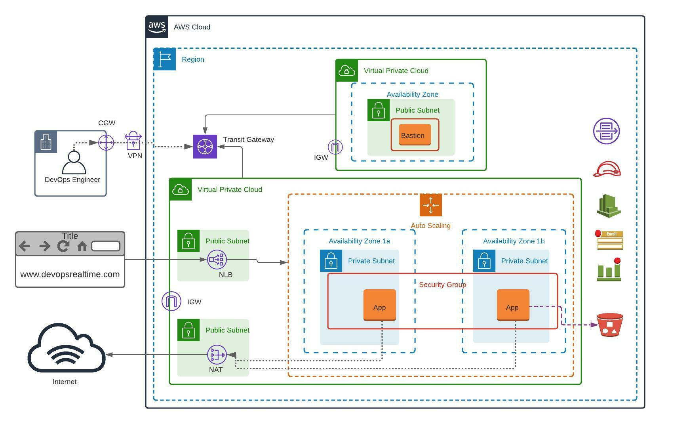

Introduction
Deploy a Modular and Scalable Virtual Network Architecture with Amazon VPC.

VPC Architecture Overview
Table of Contents
- Goal
- Pre-Requisites
- Pre-Deployment
- VPC Deployment
- Validation
Goal
The goal of this project is to deploy a modular and scalable virtual network architecture using Amazon VPC.
Pre-Requisites
- Must have an AWS account to create infrastructure resources on AWS cloud
- Source Code
Pre-Deployment
- Customize the application dependencies on AWS EC2 instance and create the Golden AMI:
- AWS CLI
- Install Apache Web Server
- Install Git
- CloudWatch Agent
- Push custom memory metrics to CloudWatch
- AWS SSM Agent
VPC Deployment
- Build VPC network (192.168.0.0/16) for Bastion Host deployment as per the architecture shown above
- Build VPC network (172.32.0.0/16) for deploying Highly Available and Auto Scalable application servers
- Create NAT Gateway in Public Subnet and update Private Subnet associated Route Table
- Create Transit Gateway and associate both VPCs for private communication
- Create Internet Gateway for each VPC and Public Subnet associated Route Table
- Create CloudWatch Log Group with two Log Streams for VPC Flow Logs
- Enable Flow Logs for both VPCs and push to CloudWatch Log Groups
- Create Security Group for Bastion Host allowing port 22 from public
- Deploy Bastion Host EC2 instance in the Public Subnet with EIP
- Create S3 Bucket to store application-specific configuration
- Create Launch Configuration with the following settings:
- Golden AMI
- Instance Type – t2.micro
- User data to pull code from Bitbucket Repository
- IAM Role for Session Manager and S3 bucket access
- Security Group allowing port 22 from Bastion Host and port 80 from Public
- Key Pair
- Create Auto Scaling Group with Min: 2 Max: 4 and two Private Subnets
- Create Target Group and associate it with ASG
- Create Network Load Balancer in Public Subnet and add Target Group
- Update Route 53 hosted zone with CNAME record routing traffic to NLB
Validation
- As DevOps Engineer, login to Private Instances via Bastion Host
- Login to AWS Session Manager and access EC2 shell from console
- Browse web application from public internet browser using domain name and verify that the page loads